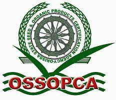

<div class="container">
  
  <div class="card">
    <div class="circle">
      
    </div>
    <h6><b>ବିହନ ଲାଇସେନ୍ସିଂ</b></h6>
    <br>
    <div class="content">
      <!-- <ul>
        <li> <a href="http://agrisnetodisha.ori.nic.in/agrisnetSLS/" target="_blank">ଅନ୍ ଲାଇନ୍ ବିହନ ଲାଇସେନ୍ସିଂ</a></li>
        <li> <a href="http://agrisnetodisha.ori.nic.in/agrisnetsls/Seed/StateDealers.aspx" target="_blank">ରାଜ୍ୟସ୍ତରୀୟ
            ବିହନ ବିକ୍ରେତା ତାଲିକା</a></li>
        <li> <a href="http://agrisnetodisha.ori.nic.in/agrisnetsls/Seed/DistApproved.aspx" target="_blank">ଜିଲ୍ଲା କୃଷି
            ଅଧିକାରୀ ଅନୁଯାୟୀ ବିକ୍ରେତା ତାଲିକା</a></li>
        <li> <a href="http://agrisnetodisha.ori.nic.in/agrisnetsls/Seed/DistOSSC.aspx" target="_blank">ଓଡ଼ିଶା ରାଜ୍ୟ ବିହନ
            ନିଗମର ବିକ୍ରେତା ତାଲିକା.</a></li>
        <li> <a href="http://agrisnetodisha.ori.nic.in/agrisnetsls/Seed/DistOAIC.aspx" target="_blank">ଓଡ଼ିଶା କୃଷି ଶିଳ୍ପ
            ନିଗମର ବିକ୍ରେତା ତାଲିକା </a></li>
        <li> <a href="http://agrisnetodisha.ori.nic.in/agrisnetsls/Seed/DistPVT.aspx" target="_blank">ଜାତୀୟ ବିହନ ନିଗମର
            ବିକ୍ରେତା ତାଲିକା </a></li>
        <li> <a href="http://agrisnetodisha.ori.nic.in/agrisnetsls/Seed/DistPVT.aspx" target="_blank">ଘରୋଇ ବିହନ ବିକ୍ରେତା
            ତାଲିକା </a></li>
        <li> <a href="http://agrisnetodisha.ori.nic.in/agrisnetsls/Seed/DistPAC.aspx" target="_blank">ଲିଷ୍ଟ ଅଫ ପ୍ୟାକ୍ସ
            ଡିଲର</a></li>
      </ul> -->
      <ul>
        <li> <a href="https://odishaagrilicense.nic.in/" target="_blank">ଅନ୍ ଲାଇନ୍ ବିହନ ଲାଇସେନ୍ସିଂ</a></li>
      </ul>
    </div>
  </div>

  <div class="card">
    <div class="circle">
      
    </div>
    <h6><b> ବିହନ ପ୍ରମାଣିକରଣ</b></h6>
    <br>
    <div class="content">
      <ul>
        <li> <a href="https://odishaagrilicense.nic.in/" target="_blank">
          ଓଡିଶା ରାଜ୍ୟ ବିହନ ଓ ଜୈବ ଉତ୍ପାଦ ପ୍ରମାଣନ ସଂସ୍ଥା
      </a></li>
      </ul>
      <!-- <ul>

        <li>
            <a href="SeedPortalData/OSSOPCA_News_Letter/PRAMANIKA-7thEDITION.pdf" target="_blank">ଓସୋଓପକା  ୭ତମ ପ୍ରାମାଣିକ ପତ୍ରିକା</a></li>
          <li>
            <a href="http://ossopca.nic.in/Plant.aspx" target="_blank">ବିହନ ପ୍ରକ୍ରିୟାକରଣ କେନ୍ଦ୍ରର ତାଲିକା</a></li>
          <li>
            <a href="http://ossopca.nic.in/scoasco.aspx" target="_blank">ବିହନ ପ୍ରମାଣିକରଣ ଅଧିକାରୀ ଓ ସହକାରୀ </a></li>
          <li>
            <a href="http://ossopca.nic.in/PublicInformation/Matrix.aspx" target="_blank">ମଣ୍ଡଳ ଅନୁଯାୟୀ ଫସଲ ପଞ୍ଜିକରଣ ତଥ୍ୟ</a></li>
          <li>
            <a href="http://ossopca.nic.in/PublicInformation/OssopcaTotalCropSummary.aspx" target="_blank">ସଂସ୍ଥା ଅନୁଯାୟୀ ଯାଞ୍ଚ କରାଯାଇଥିବା ତଥ୍ୟ</a></li>
          <li>
            <a href="http://ossopca.nic.in/" target="_blank">ବିହନ ଉତ୍ପାଦନକାରୀଙ୍କ ପାଇଁ ଅନ୍ ଲାଇନ୍&nbsp; ପଞ୍ଜିକରଣ ବ୍ୟବସ୍ଥା</a></li>
        </ul> -->
    </div>
</div>


  <div class="card">
    <div class="circle">
      
    </div>
    <h6><b>ବିହନ ପରିସଂଖ୍ୟାନ</b></h6>
    <br>
    <div class="content">
      <ul>
        <li>
          <a href="http://odishaseedsportal.nic.in/SeedPortalData/DISTRIBUTION_OF_DIFFERENT_SEEDS_FROM_2009-14.pdf">ବିଗତ 5 ବର୍ଷ ମଧ୍ୟରେ ବିହନ ବଣ୍ଟନ </a></li>
        <li>
          ବିଗତ 5 ବର୍ଷ ମଧ୍ୟରେ ବିହନ ଉତ୍ପାଦନ</li>
        <li>
          <a href="http://odishaseedsportal.nic.in/SeedPortalData/SRR_during_2008-09_to_2012-13.pdf">ବିଗତ 5 ବର୍ଷ ମଧ୍ୟରେ ବିହନ ପ୍ରତିବଦଳ ହାର</a></li>
        <li>
          ଆସନ୍ତା 5 ବର୍ଷ ମଧ୍ୟରେ ପ୍ରକଳ୍ପିତ ବିହନ ପ୍ରତିବଦଳ ହାର</li>
      </ul>
    </div>
  </div>
</div>